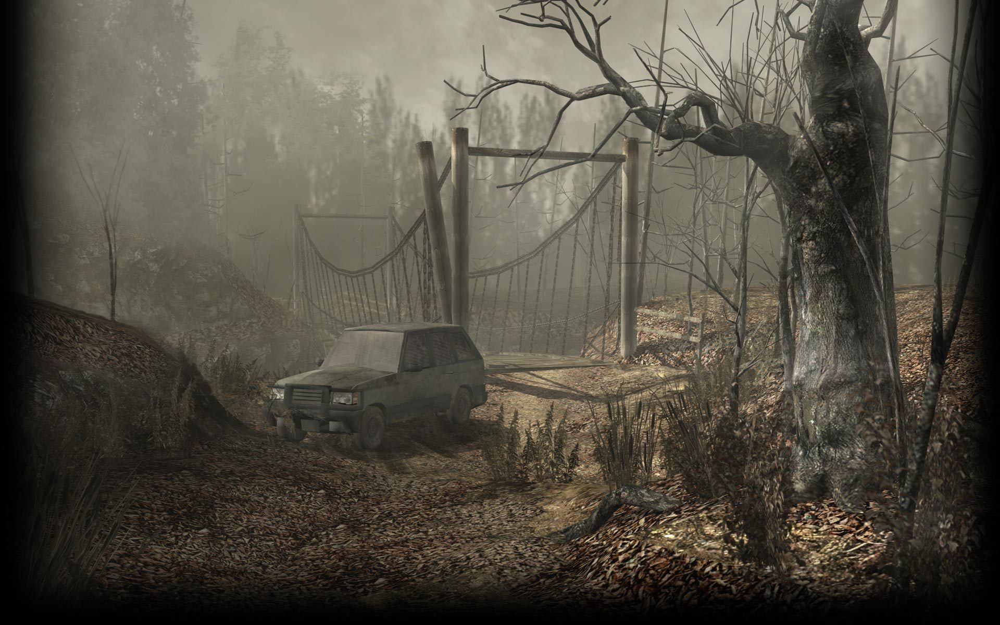
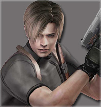
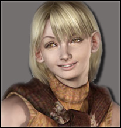
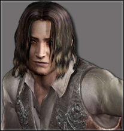
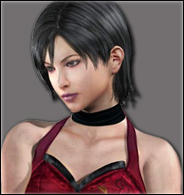
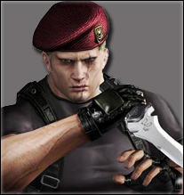
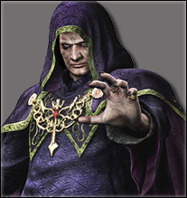
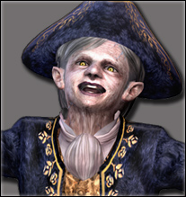
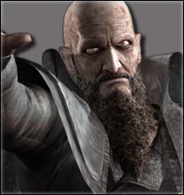

RESIDENT EVIL 4
1.Historia
Seis anos após os acontecimentos de Resident Evil 2, o ex-policial Leon Scott Kennedy é enviado em uma missão para resgatar Ashley Graham, filha do presidente dos Estados Unidos, que foi raptada por uma seita misteriosa. Ele viaja para uma aldeia rural na Espanha, onde encontra um grupo de moradores violentos que dedicam suas vidas para os Los Illuminados ("os iluminados" em espanhol), o culto que sequestrou Ashley. Os moradores eram simples fazendeiros até serem infectados por um parasita conhecido como Las Plagas ("A Praga" em espanhol). Na vila, Leon é capturado pelo chefe da aldeia, Bitores Mendez, que injeta nele o parasita Las Plagas. Ele é mantido amarrado em um cativeiro juntamente com Luis Sera, um ex-pesquisador dos Illuminados. Os dois trabalham juntos para escapar, mas em seguida seguem caminhos separados. Leon descobre que Ashley está sendo mantida presa em uma capela, e consegue resgatá-la. Ambos fogem do local após Osmund Saddler, líder da seita, revelar seus planos para usar as Plagas injetadas em Ashley para causar um desastre nos Estados Unidos quando ela retornar. Leon e Ashley tentam se refugiar dentro do castelo de Ramon Salazar, um servo de Saddler, mas são atacados por mais Illuminados. Os dois são separados um do outro por armadilhas de Salazar. Enquanto isso, Sera procura por pílulas para retardar a infecção de Leon e Ashley, e, em seguida, acha uma amostra de plaga. Ele traz os dois itens para Leon, mas é morto por Saddler, que toma a amostra, enquanto as pílulas para suprimir a infecção permanecem na posse de Leon. Ainda no castelo, ele se encontra brevemente com Ada Wong, uma mulher de seu passado que o apoiou em toda a sua missão. Por fim, ele confronta e mata Salazar. Leon então descobre que Ashley foi levada para um centro de pesquisa em uma ilha vizinha e vai encontrá-la. Leon descobre depois que um de seus ex-companheiros de seus anos de formação, Jack Krauser, está vivo e é responsável pelo sequestro de Ashley.Ada e Krauser estão trabalhando juntos para alguém relacionado a Umbrella, que Krauser pretende para matar Saddler quando ele tiver chance. Este descobre os planos, e ele ordena a Krauser para matar Leon, sabendo que não importa qual deles morra, pois ele iria se beneficiar. Após derrotar Krauser, Leon resgata Ashley, e eles removem as plagas de seus corpos usando um dispositivo radioterápico especializado. Leon confronta Saddler depois de ver Ada como seu refém. Com a ajuda dela, Leon mata Saddler e Ada leva a amostra. Ela então foge do complexo em um helicóptero, deixando Leon e Ashley para escaparem em seu jet-ski enquanto a ilha explode.
2.Personagens
- Leon S. Kennedy
- Ashley Graham
- Luis Sera
- Ada Wong
- Jack Krauser
- Osmund Saddler
- Ramon Salazar
- Bitores Mendez
Após sobreviver à tragédia que assolou a cidade de Raccoon, em Setembro de 1998, Leon foi recrutado para o Serviço Secreto do governo americano, onde treinou arduamente e se tornou um agente especial, com ordens de cuidar da segurança do presidente americano. Pouco depois de assumir a nova função, porém, a filha do Presidente Graham, Ashley, é sequestrada por um grupo identificado como Los Illuminados. É Leon quem parte em busca de resgatar a garota em uma remota vila rural na Espanha, onde se depara com uma população violenta e submissa ao líder do culto, o cruel Osmund Saddler.

Uma jovem de 22 anos, e estudante da Universidade de Massachusetts. Seu pai havia assumido recentemente o cargo de Presidente dos Estados Unidos após a renúncia do presidente anterior. Ashley foi raptada pelo grupo religioso Los Illuminados, quando voltava da universidade para casa, e levada a uma vila na Espanha, onde foi mantida confinada após ser injetada com ovos do parasita Las Plagas. Após ser encontrada por Leon, eles se unem para sobreviver a uma horda de aldeões hostis, cuja ordem é mantê-los no local a qualquer custo.

Espanhol misterioso e irônico, estava preso e amordaçado dentro de um armário antes de ser encontrado por Leon. Possui um grande conhecimento sobre Las Plagas, e é por isto que Saddler, o líder dos Los Illuminados, não pode permitir que ele tenha qualquer contato com o mundo exterior. Ainda assim, em uma tentativa de pedir ajuda a um velho amigo de faculdade, Sera teve seu e-mail interceptado pela espiã Ada Wong, e fez um acordo com ela: uma amostra do parasita em troca de sua liberdade e do fim do culto religioso.

Contratada por Albert Wesker, a bela espiã chega à vila espanhola com o único objetivo de obter uma amostra da Plaga Controle sob o poder de Osmund Saddler, mas não esperava reencontrar Leon, o outrora policial recém-formado na academia com quem unira forças para sobreviver durante o pesadelo em Raccoon. Mesmo com ordens contrárias às do agente, Ada não resiste em ajudá-lo, sempre que pode, a conter a horda de aldeões violentos, e a dupla, por fim, acaba jogando mais uma vez do mesmo lado, na busca por sobreviver aos Los Illuminados e concluir suas diferentes missões.

Ex-soldado americano, Krauser foi parceiro de Leon no passado, mas, após ser exonerado por conta de um ferimento no braço que o incapacitava de continuar lutando, forjou a própria morte para agir nas sombras sob ordens de Albert Wesker. Para ganhar a confiança dos Los Illuminados, ele se infiltra no culto e aceita raptar a filha do presidente, em troca da administração de uma Plaga Controle em seu organismo, recuperando o movimento perdido de seu braço e aprimorando suas habilidades já incríveis de soldado veterano. Com ordens de eliminar Leon, Krauser vislumbra a chance de um acerto de contas com o agente.

Líder e alto sacerdote dos Los Illuminados, Saddler é o responsável pela ordem do sequestro de Ashley Graham, filha do presidente americano. Com o pretexto de purificação com a administração das Plagas, ele transforma todos os habitantes da vila em indivíduos totalmente submissos às suas ordens, e pretende fazer o mesmo com o mundo, começando pela nação mais poderosa, os Estados Unidos. Cruel, ele persuade e sacrifica quantas pessoas forem necessárias para finalmente concluir os seus planos de dominação global com o uso do parasita.

Descendente de castelões, Salazar é o oitavo e último na linha de sucessão de sua nobre família, vivendo em um castelo próximo à vila. Seu primeiro ancestral fora o responsável por selar as Plagas no subsolo do castelo e afastar os Los Illuminados da região, mas Ramon acaba sendo convencido por Saddler a utilizar o poder do parasita para purificar a raça humana e impor o controle do culto sob o mundo. A administração de uma Plaga Controle em seu organismo fez com que ele adquirisse uma aparência perturbadora.

Chefe da vila e responsável por guardar os portões que levam ao castelo da família Salazar, não é apenas a sua posição de poder que impõe medo em seus subordinados, mas seu imenso e desproporcional tamanho tornam a tarefa ainda mais fácil, já que ninguém tem a coragem de encará-lo. Após ser manipulado por Saddler e ser administrado com uma Plaga Controle, Mendez convence toda a população da vila a “receber” as Plagas. É ele quem dá todas as ordens aos aldeões para proteção da vila e dos planos dos Los Illuminados.
